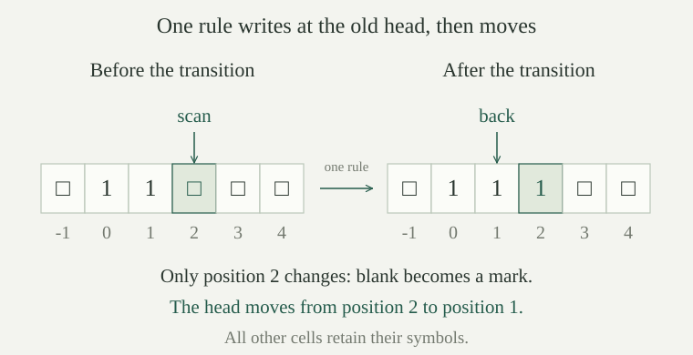

A tape alphabet is a finite set \(\Gamma\) with a distinguished blank symbol \(\square\) and a distinct mark symbol \(\mathtt{1}\). A finite nonempty set \(Q\) supplies the control states, with a specified initial state \(q_0\). The three movement instructions \(L,S,R\) have displacements \(d(L)=-1\), \(d(S)=0\), and \(d(R)=1\); \(S\) means stay.
A deterministic Turing machine consists of these data and a transition table
A row \(\delta(q,a)=(q',b,m)\) says: in state \(q\), on reading \(a\), write \(b\), move according to \(m\), and enter \(q'\). A row with value \(\mathrm{none}\) says halt. The alternatives are distinct; \(\mathrm{none}\) is not a tape symbol. There are only \(|Q||\Gamma|\) input rows, and each row has one specified value, so this is a finite rule table. Its size does not prescribe a bound on the number of times a rule may be used.
We use writing and moving in a single transition, and permit staying in place. Avigad's separate write/left/right actions are a different convention; the rules here, rather than an unstated translation between conventions, determine all calculations below.
A tape is a function \(t:\mathbb Z\to\Gamma\) whose nonblank support \(\operatorname{supp}(t)=\{z:t(z)\ne\square\}\) is finite. There is no leftmost or rightmost cell. Finiteness concerns the nonblank contents, not the available positions: more cells may be used later.
A configuration is a triple \(C=(q,h,t)\), consisting of the control state, an integer head position \(h\), and a tape. The scanned symbol is \(t(h)\). Tape coordinates stay fixed when the head moves. In particular, moving left from position \(0\) reaches position \(-1\); it does not delete a cell or renumber the tape.
For \(b\in\Gamma\), the one-cell update \(t[h\leftarrow b]\) is the function equal to \(b\) at \(h\) and to \(t(z)\) at every \(z\ne h\). It is again a tape, since its support is contained in \(\operatorname{supp}(t)\cup\{h\}\), a finite set.
The one-step operation \(\Delta\) on configurations is defined by looking up the state and scanned symbol. If \(\delta(q,t(h))=\mathrm{none}\), set \(\Delta(q,h,t)=\mathrm{none}\); call this a halting configuration. Otherwise, if the row is \((q',b,m)\), set
Write \(C\longrightarrow C'\), and call it an actual transition, when \(\Delta(C)=C'\). The table reads the old cell \(t(h)\), and writes at the old head position before changing that position. It does not read the newly reached cell until a subsequent transition. A state may halt on one scanned symbol and continue on another: halting means the actual table lookup is \(\mathrm{none}\), not merely that a state has a suggestive name.
For a fixed machine and configuration \(C\), there is at most one \(C'\) with \(C\longrightarrow C'\). A halting configuration has no actual transition. If \((q,h,t)\longrightarrow(q',h',t')\), then \(|h'-h|\le1\) and \(t'(z)=t(z)\) for every \(z\ne h\). Thus the support bound in applies after every step.
The state and scanned symbol select one row of the function \(\delta\). If it is \(\mathrm{none}\), there is no successor. Otherwise its single triple determines the new state, the displacement, and the one-cell update. Consequently any two proposed successors agree in all three components. The permitted displacements are \(-1,0,1\), and the definition of the update leaves all other cells unchanged.
The stopped advance operation \(A\) sends a configuration to its successor when \(\Delta\) is defined, and sends a halting configuration to itself. For an initial configuration \(C\), its run is the sequence \(C_0,C_1,\ldots\) defined by \(C_0=C\) and \(C_{k+1}=A(C_k)\).
This convention gives a configuration at every natural-number index. Once the machine halts, its configuration is repeated only to keep the indexing total; those repetitions are not actual transitions. A halting time is an index \(k\) for which \(C_k\) is halting. When one exists, the least such index counts the actual transitions before stopping. It can be zero.
A finite actual run is a list \(D_0,\ldots,D_r\) with \(D_i\longrightarrow D_{i+1}\) for every \(i<r\). It cannot continue from a halting configuration. An actual transition may nevertheless leave a nonhalting configuration unchanged; equality of two consecutive configurations alone does not establish halting.
Every finite actual run starting at \(C\) agrees with \(C_i\) at each of its indices. If \(C_k\) is halting, then \(C_{k+j}=C_k\) for every \(j\in\mathbb N\). In particular, any two halting configurations occurring in the stopped run are equal.
For the first assertion, induct on the index. Both initial configurations are \(C\). If the actual run agrees with \(C_i\), its next actual transition is the uniquely determined successor from , and \(A\) chooses that successor too. This proves agreement at the next index.
For the second assertion, induction on \(j\) starts with \(C_k=C_k\). If the configuration at \(k+j\) is \(C_k\), it is halting, so \(A\) leaves it fixed. Finally, given two halting indices \(k,\ell\), one is at most the other; the second assertion identifies the later configuration with the earlier one.
Start at any configuration \(C_0=(q_*,h_0,t_0)\), and write \(C_i=(q_i,h_i,t_i)\). For every \(i\in\mathbb N\), \(|h_i-h_0|\le i\). Consequently the positions visited through index \(k\) lie in the \(2k+1\) integer positions from \(h_0-k\) to \(h_0+k\). Outside that interval, \(t_k(z)=t_0(z)\), and
Induct on \(i\). At zero the head has not moved. A nonhalting step changes the head by one of \(-1,0,1\), so the triangle inequality gives \(|h_{i+1}-h_0|\le |h_{i+1}-h_i|+|h_i-h_0|\le1+i\). A halted repetition changes the head by zero and satisfies the same bound.
If \(i\le k\), this bound puts \(h_i\) in the stated interval. Its positions are exactly \(h_0-k,h_0-k+1,\ldots,h_0+k\), hence there are \(2k+1\). At each of the first \(k\) advances, an actual transition writes only at its old head position, while a halted repetition writes nothing. Thus no cell outside the interval is changed: induction over those advances gives \(t_k(z)=t_0(z)\) there. Any nonblank cell outside the interval was therefore already in the initial support, proving the support inclusion. A finite actual run has the same configurations at its indices by , so it satisfies these bounds too.
This is a bound for each finite prefix. The interval grows with \(k\); the theorem supplies no finite interval containing the whole of every infinite run.
The unary input tape for \(n\in\mathbb N\) is \(t_n(z)=\mathtt{1}\) when \(0\le z<n\), and \(t_n(z)=\square\) otherwise. Its support is the finite list of positions \(0,\ldots,n-1\); for \(n=0\) the tape is entirely blank. The input configuration is \(I_T(n)=(q_0,0,t_n)\). Thus input \(n\) uses \(n\) marks, rather than the \(n+1\) input marks in Avigad's convention.
For a configuration \(C=(q,h,t)\), its unary readout \(\operatorname{out}(C)\) is the least \(r\in\mathbb N\) such that \(t(h+r)\ne\mathtt{1}\). Equivalently, count consecutive marks starting at the head and proceeding right until the first nonmark. Marks to the left or beyond that first nonmark are ignored. With an alphabet larger than \(\{\square,\mathtt{1}\}\), any other symbol also ends this count.
The least \(r\) exists. A finite support is contained in some interval \([-B,B]\) with \(B\in\mathbb N\), using \(B=0\) if the support is empty and otherwise taking a bound on the finitely many absolute coordinates. For \(r=B+|h|+1\), we have \(h+r>B\), so this cell is blank and therefore is not a mark. The natural numbers among the possible stopping positions have a least one. On the input configuration itself, the first \(n\) cells are marks and cell \(n\) is blank, so \(\operatorname{out}(I_T(n))=n\).
The machine's computed partial function is described by
where the run starts at \(I_T(n)\). If no such \(k,m\) exist, write \(F_T(n)\uparrow\). The next result verifies that this is a partial function in the previously specified sense of unique numerical outputs. The readout is defined for every configuration; it is accepted as the program's output only at a halting configuration.
The numerical simulation of tape runs realizes this same partial function with primitive-recursive initialization, transition, halt test and readout.
For every fixed machine \(T\) and \(n,a,b\in\mathbb N\), if \(F_T(n)\downarrow=a\) and \(F_T(n)\downarrow=b\), then \(a=b\). Moreover, the two witnessing halting configurations are equal, including their states, head positions, and tapes.
Choose the witnessing indices \(k,\ell\). Both configurations belong to the same stopped run from \(I_T(n)\), and both are halting. They are equal by . Applying the single readout function to that configuration gives \(a=b\). This also explains why permitting repeated indices after halting creates no additional possible outputs.
Suppose every row in state \(q_H\) says halt. Let \(t\) have marks exactly at positions \(0,1\). Compute the readouts of \((q_H,0,t)\), \((q_H,1,t)\), and \((q_H,2,t)\). Do their different values contradict ?
The readouts are respectively \(2,1,0\): count from the specified head until the first nonmark. The third configuration is already scanning a nonmark. These are different configurations, and the question did not place them in a single run from one input. The uniqueness theorem fixes that whole starting configuration through its input convention. To read an entire marked block, place the final head at its left end; specifying the tape alone is insufficient.
The successor machine has alphabet \(\{\square,\mathtt{1}\}\), states \(\mathrm{scan},\mathrm{back},\mathrm{halt}\), and initial state \(\mathrm{scan}\). Its entire transition table is below. Every nonhalting entry has the order (new state, symbol to write, movement).
| Current state | Read \(\mathtt{1}\) | Read \(\square\) |
|---|---|---|
| \(\mathrm{scan}\) | \((\mathrm{scan},\mathtt{1},R)\) | \((\mathrm{back},\mathtt{1},L)\) |
| \(\mathrm{back}\) | \((\mathrm{back},\mathtt{1},L)\) | \((\mathrm{halt},\square,R)\) |
| \(\mathrm{halt}\) | \(\mathrm{none}\) | \(\mathrm{none}\) |
In state \(\mathrm{scan}\), a mark is rewritten unchanged and the head moves right. The first blank receives the new mark, and the head immediately moves left in state \(\mathrm{back}\). That state crosses marks to the left. On the blank just before the block, it moves right and enters \(\mathrm{halt}\). For example, on input \(2\), the configuration with state \(\mathrm{scan}\), head \(2\), and tape \(t_2\) goes in one transition to \((\mathrm{back},1,t_3)\).

For every \(n\in\mathbb N\), the successor machine first halts after exactly \(2n+2\) actual transitions, in configuration \((\mathrm{halt},0,t_{n+1})\). Consequently \(F_T(n)\downarrow=n+1\).
The scanning invariant, with the original input \(n\) fixed, is: for \(0\le i\le n\), the configuration at time \(i\) is \((\mathrm{scan},i,t_n)\). At \(i=0\) this is the input convention. If \(i<n\), the scanned cell is a mark. Its row preserves the tape, moves right, and stays in \(\mathrm{scan}\), proving the next case.
At time \(n\), cell \(n\) is blank. The next transition writes a mark there, giving exactly \(t_{n+1}\): the old marked cells were \(0,\ldots,n-1\), and no other cell changes. At time \(n+1\) the state is \(\mathrm{back}\) and the head is at \(n-1\). For \(n=0\), this is the legitimate tape position \(-1\).
The return invariant is: for \(0\le j\le n\), time \(n+1+j\) has configuration \((\mathrm{back},n-1-j,t_{n+1})\). The case \(j=0\) was just established. If \(j<n\), the head lies between \(0\) and \(n-1\), so it reads a mark. The \(\mathrm{back}\) row rewrites that mark and moves one cell left, proving the next case. At \(j=n\), the head is at \(-1\), whose symbol is blank. Its row leaves that blank unchanged, moves right to \(0\), and enters \(\mathrm{halt}\).
The last time is \(n+1+n+1=2n+2\). All earlier displayed configurations have state \(\mathrm{scan}\) or \(\mathrm{back}\), whose rows are defined on both alphabet symbols, so none is halting. Both rows of \(\mathrm{halt}\) are undefined, so this is the first halting time. Finally, the \(n+1\) consecutive marks from head \(0\) give readout \(n+1\). The two invariants also cover \(n=0\), with no scanning steps or return steps across marks.
List the head positions and states on inputs \(0\) and \(2\), through the first halting configuration. On input \(2\), when does the new mark appear?
For input \(0\), the successive (state, head) pairs are \((\mathrm{scan},0)\), \((\mathrm{back},-1)\), and \((\mathrm{halt},0)\). The first transition writes the only mark, and the second returns to it. This is two transitions, not an immediate halt.
For input \(2\), the pairs at times \(0,\ldots,6\) are \((\mathrm{scan},0)\), \((\mathrm{scan},1)\), \((\mathrm{scan},2)\), \((\mathrm{back},1)\), \((\mathrm{back},0)\), \((\mathrm{back},-1)\), and \((\mathrm{halt},0)\). The third transition, from time \(2\) to time \(3\), changes the tape from \(t_2\) to \(t_3\). The tape then stays \(t_3\), while the head returns. These lists follow directly from the two invariants, and the stated first halting times agree with \(2n+2\).
Take the binary alphabet and one state \(r\), with \(\delta(r,a)=(r,a,R)\) for each symbol \(a\). On every input \(n\), its configuration at every time \(k\) is \((r,k,t_n)\), so it never halts and \(F_T(n)\uparrow\). Its first \(k+1\) visited positions are exactly \(0,\ldots,k\).
Induct on \(k\). At zero the configuration is the prescribed input. A step rewrites the symbol already present, so the one-cell update is the original tape: at the scanned cell it writes its existing value, and all other cells are unchanged. It increments the head and keeps the only state. This proves the displayed configuration for the next time. Every row is defined, so no time is halting. The distinct head positions \(0,\ldots,k\) are exactly those visited through time \(k\), establishing the final assertion.
Thus each finite prefix has a finite visited region, as proved in , while there is no fixed finite region containing this entire run.
Replace \(R\) by \(S\) in the preceding one-state machine, so \(\delta(r,a)=(r,a,S)\). Prove that its run from any configuration is constant but never halts. On the blank input \(0\), is its computed output \(0\)?
It rewrites the existing symbol, has displacement zero, and retains its only state. Thus its actual successor is the same configuration; induction makes every configuration in the run equal to the first. Each row nevertheless remains defined. Unlike a repeated halted configuration, each repetition here is an actual transition, and the machine never halts. Its visited set is the single initial head position. On blank input \(0\), the readout at every time is \(0\), but no time is halting, so \(F_T(0)\uparrow\). Undefined output is different from the numerical output \(0\), exactly as in the partial-function convention.